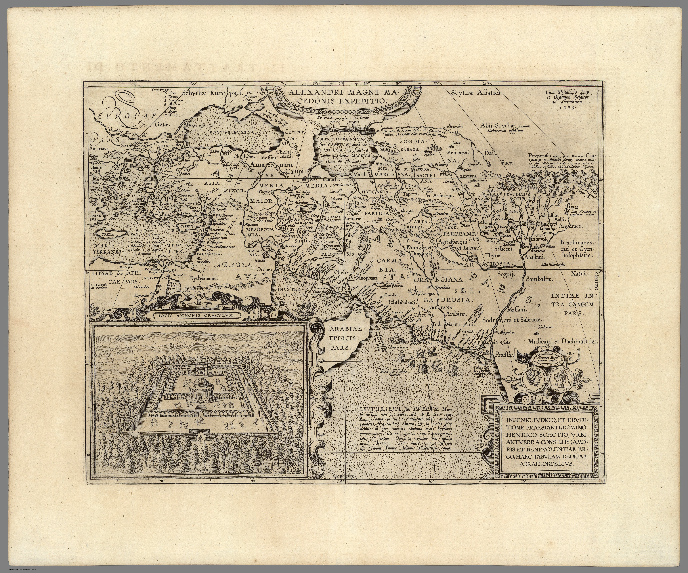

Click to enlargeA map of the campaigns of Alexander the Great from the Parergon, Ortelius's atlas of the ancient world — the section he drew himself rather than compiling from others. India enters not as contemporary territory but as the eastern limit of the classical world: the land Alexander reached and antiquity imagined.
Authorship and object
Unlike the Theatrum, the Parergon was Ortelius's personal scholarship; he drafted its maps from classical texts, and they were engraved by hand (Jan Wierix among the engravers). This impression is from the 1608 Italian Theatro del Mondo, the first edition with Italian text, translated by Filippo Pigafetta and published by Jan Baptista Vrients after Ortelius's death.
A historical, not a current, map
The map reconstructs Alexander's route toward the Hydaspes and the Indus, plotting ancient peoples, cities and the geography of Arrian and the classical authors. It is an exercise in antiquarian cartography — mapping the past, with the toponymy of antiquity rather than of the sixteenth century.
The gaze
For Renaissance Europe, the deepest frame of reference for India was classical. To map Alexander's expedition was to locate India where European learning had always placed it: at the edge of the known world, the farthest reach of Western conquest and curiosity. The lens here is inheritance — India understood through Greek and Roman eyes before it is seen through European ones.